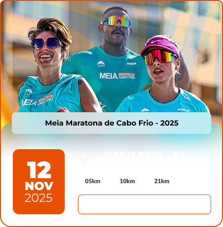
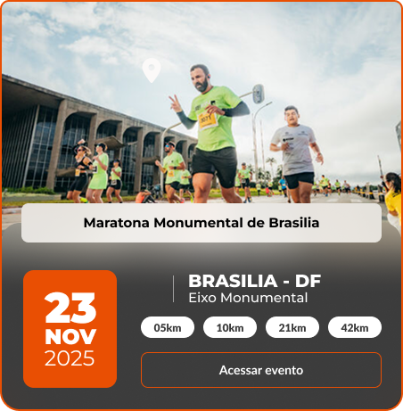
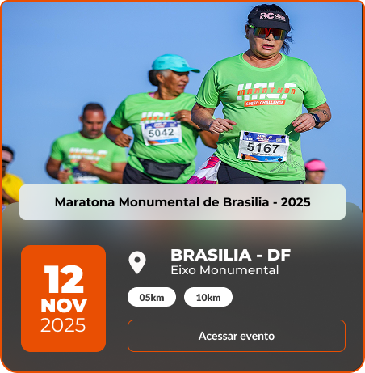
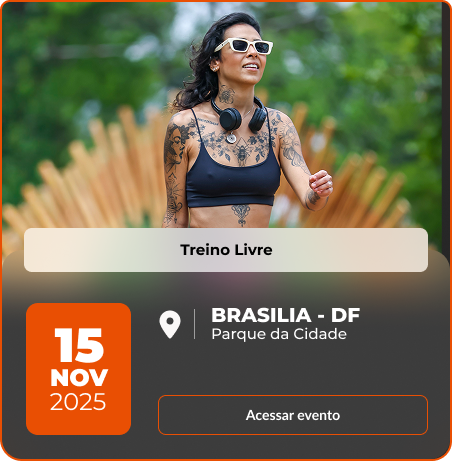
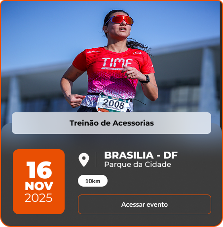
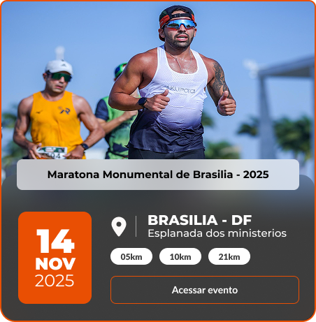

Corridas destaques
Escolha entre os melhores eventos de corrida do Brasil, com comodidade e segurança.





Descubra o que
falam de nós.
falam de nós.
Promove o bem-estar físico e mental,
ajuda os colaboradores a monitorarem seu
desempenho e a se conectarem com
uma comunidade saudável e ativa.
ajuda os colaboradores a monitorarem seu
desempenho e a se conectarem com
uma comunidade saudável e ativa.